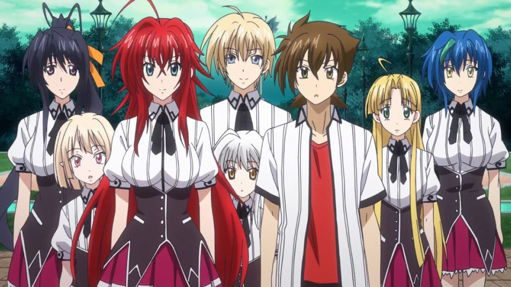

One of my favourite animes of all time has to be Highschool DxD, I love the art style and with 4 seasons currently and more to come out it has so much content to watch and explore, my favourite character has to be the Crimson Haired "Ruin Princess", Rias. Rias is a character born into a family of devils. All devils have an evil piece placed inside of them at creation, theses pieces are the exact same as chess: pawn, Knight, Queen, Bishop and King. Each piece has a special attrubite boost, our main character is a pawn so he can assend into any of the other 4 pieces at will. Its quite interesting
